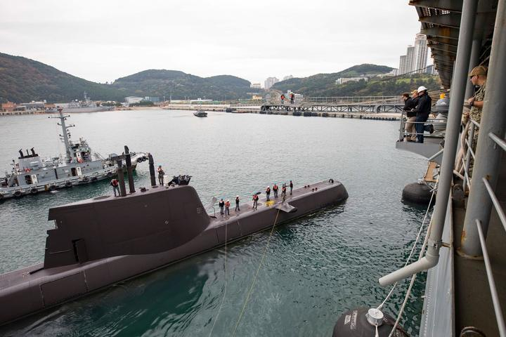

The conventionally powered ROKS Ahn Jung-Geun alongside USS Emory S. Land at Busan on November 15, 2024. The photo illustrates South Korea’s existing submarine fleet. Photographed November 15, 2024; historical context.
Photo: Mass Communication Specialist Seaman Apprentice Ethan Lambert, U.S. Navy · Public domain · via DVIDS. Cropped and resized by IPR; IPR gradient overlaid. Visual context, not evidence. The appearance of U.S. Department of War (DoW) visual information does not imply or constitute DoW endorsement.
Latest Brief · No. 26 · week ending 14 November 2026
South Korea Sets Its Nuclear-Powered Submarine Timetable as Fuel Talks Continue
Following the November procurement decision, South Korea is preparing to begin domestic development of its first nuclear-powered submarines in 2027, even as the proposed startup budget awaits parliamentary consideration and the arrangements for obtaining U.S. reactor fuel proceed through a separate diplomatic process.


_20220506.jpg){kind=link}
.jpg){kind=link}


.jpg){kind=link}

_20220504.jpg){kind=link}
_20220504.jpg){kind=link}
.jpg){kind=link}
.jpg){kind=link}